Mitsubishi
Mitsubishi
Mitsubishi Motors es una de las divisiones de la corporación japonesa Mitsubishi. A fines de la Primera Guerra Mundial, se creó esta división que originalmente fabricaba motores de avión, que llegaron a ser empleados en la Segunda Guerra Mundial. Mitsubishi quiere decir "tres diamantes" y hace referencia al logotipo de los tres diamantes que fue adoptado en marzo de 1873 por la primera empresa del grupo Mitsubishi. El logotipo, en su forma actual, está registrado desde 1914. En el año 1917 se convierte en la primera empresa automovilística japonesa en fabricar un coche de serie en Japón, el modelo “A”.
Nissan
Nissan
Nissan Motor Company, Limited es un fabricante japonés de automóviles. Su nombre común, Nissan, es un acrónimo de "Nippon Sangyo" (en japonés significa "industria japonesa"). Está entre las principales compañías automotrices en términos de producción anual de vehículos.
Navara
Nissan Navara es el nombre de las D22 y D40 generaciones de Nissan camionetas vendidos en Asia; en Norte, Centro y Sur América y el Filipinas se vende como la Nissan Frontier . La línea comenzó en 1997, en sustitución de la camioneta Nissan D21 Hardbody . A partir de 2002, la serie camioneta D22 ya no se comercializa en Japón; el principal mercado de la D22 es Norteamérica. Ahora se construye en la fábrica de Nissan en Canton, Mississippi.
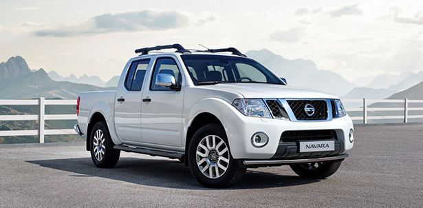Frontier
El Nissan Frontier, conocida en otros mercados como Navara, Terrano, Hardbody o Pickup, es una camioneta mediana del fabricante japonés Nissan. La tercera generación se fabrica en Tennessee (Estados Unidos) y en Barcelona (España). La segunda generación, conocida como D-22, se fabrica actualmente en México (Camiones NP-300), Brasil, Egipto, Filipinas, China, Tailandia, y Sudáfrica. Actualmente esta generación se llama NP-300 en algunos mercados.
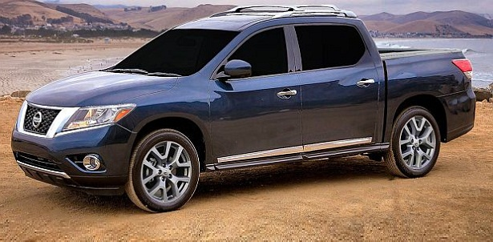Toyota
Toyota
Toyota Motor Corporation, simplemente llamado Toyota, es un fabricante de automóviles japonés con sede en Toyota (Aichi), Japón. Toyota fue el mayor fabricante de automóviles en 2012 (por producción) y tuvo ventas mundiales aproximadas de 9,8 millones de vehículos. Sin embargo, no tuvo este liderazgo en el año 2011, cuando se produjo una fuerte recesión industrial en Japón, como consecuencia del terremoto sucedido el 11 de marzo de dicho año y que entre otros afectó a la localidad de Fukushima. A causa de ello, Toyota retrocedió al tercer puesto, cediendo el liderato ante la misma General Motors y ante Volkswagen que ocupó el segundo lugar.
Hilux
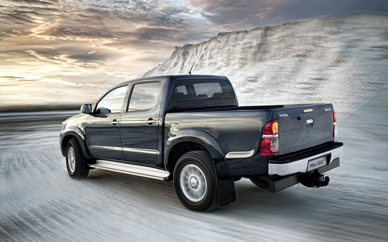La Toyota Hilux es una camioneta mediana producida por el fabricante japonés de vehículos Toyota en diversas partes del mundo.La Toyota Hilux es una camioneta compacta producida y comercializada por Toyota Motor Corporation. En Estados Unidos y Canadá, el nombre Hilux se retiró brevemente en 1976 en favor de nombres genéricos como Truck, Pickup Truck o Compact Truck, hasta que se remplazó por Tacoma en 1995.
Celica
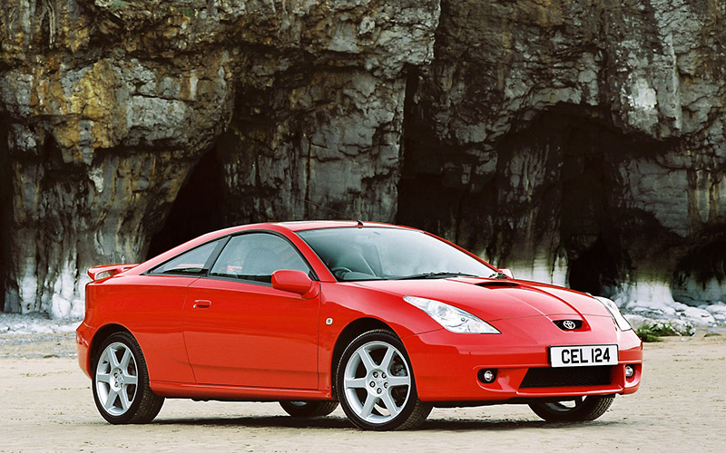El Toyota Celica es una serie de coupés populares realizadas por la empresa japonesa Toyota. El nombre se deriva de la palabra coelica que en latín significa "celestial". Este automóvil se empezó a fabricar en Japón en el año 1967. Considerado, junto con el Toyota Supra, uno de los mejores automóviles fabricados por Toyota. A lo largo de su vida útil el Celica se ha alimentado por diferentes motores de cuatro cilindros.
Supra
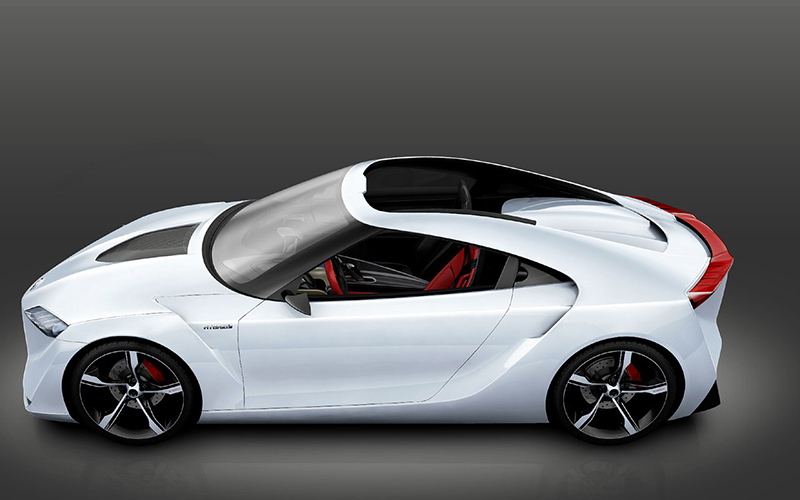El Toyota Supra es un deportivo de tracción trasera producido por el fabricante japonés Toyota desde 1979 hasta 2002. En sus comienzos, el Toyota Supra derivaba del Toyota Celica, aunque ligeramente más largo y amplio. A partir de mediados de 1986, la tercera generación del Toyota Supra pasó a ser un modelo propio. El Supra también tiene sus raíces en el Toyota 2000GT, siendo el motor su principal ejemplo.
Honda
Honda
Honda Motor Co. Ltd, es una empresa de origen japonés que fabrica automóviles, propulsores para vehículos terrestres, acuáticos y aéreos, motocicletas y en general componentes para la industria automotriz.
Civic
El Honda Civic es un automóvil del segmento C fabricado por la empresa japonesa Honda Motor Co., Ltd. Después de haber pasado por varios cambios generacionales (actualmente van por la novena), el Civic ha crecido en tamaño, colocándose entre el Honda Fit y el Honda Accord. Todas las versiones hasta el momento poseen un motor delantero transversal de 4 cilindros, tracción delantera y numerosas carrocerías, entre ellas el sedán, coupé, hatchback y Aerodeck.
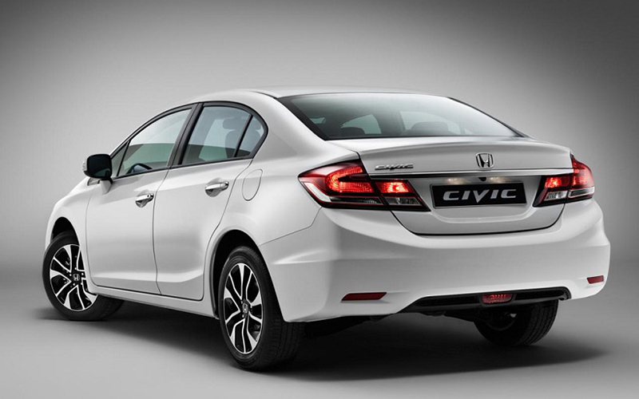CR-V
El Honda CR-V es un automóvil todoterreno del segmento C producido por el fabricante japonés de automóviles Honda. El CR-V, cuyas iniciales significan "Civic Recreation Vehicle" abarca cuatro generaciones, lanzadas respectivamente en los años 1995, 2001, 2006 y 2011, las cuales comparten elementos estructurales con distintas generaciones del Honda Civic, un automóvil de turismo. Es un cinco puertas con cinco plazas disponible con tracción delantera y tracción a las cuatro ruedas.
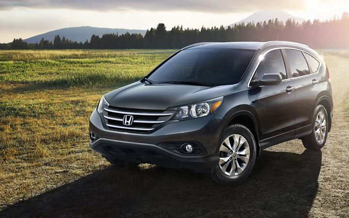Mazda
Mazda
Mazda Motor Corporation es un fabricante de automóviles con sede principal en Hiroshima, y con plantas en las localidades de Hiroshima (factoría de Ujina); Nishinoura, Nakanoseki (Hofu); y Miyoshi, Japón. En 2010, produjo 1.307.540 automóviles con ventas en China, Japón, Europa, América del Sur y Norteamérica.
Mazda 3
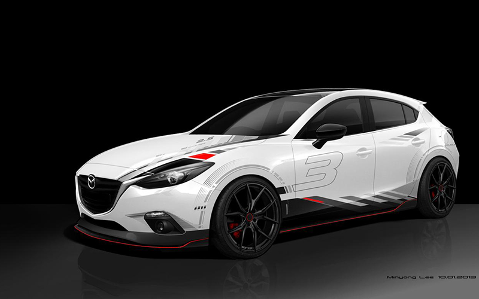El Mazda 3 (o Axela en el mercado japonés) es un automóvil de turismo del segmento C fabricado por la marca japonesa de automóviles Mazda. Este modelo, que utiliza la plataforma del Ford Focus II, fue introducido en el año 2004, reemplazando al Mazda 323.
RX-7
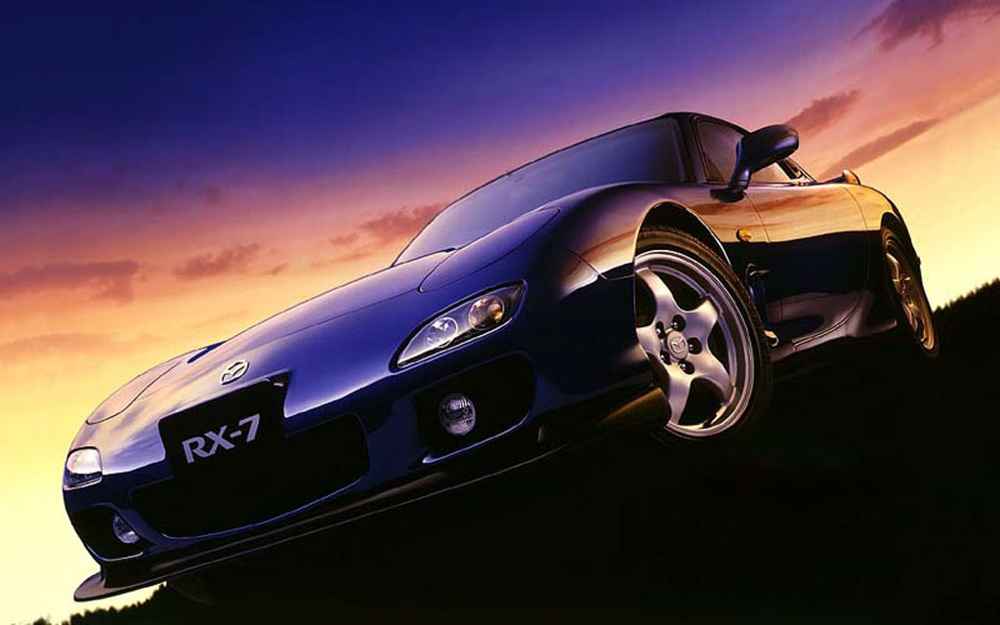El Mazda RX-7 es un automóvil deportivo producido por el fabricante japonés Mazda entre los años 1978 y 2002. El RX-7 rivalizaba con otros deportivos asequibles, como el Toyota Supra, el Honda NSX, la línea Z de Nissan, y el Nissan Skyline.
RX-8
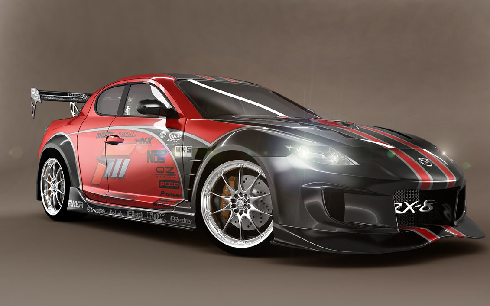El Mazda RX-8 era un automóvil deportivo producido por el fabricante japonés Mazda desde el verano del año 2002 hasta diciembre de 2010. Era un cupé de cuatro puertas con motor central delantero longitudinal a propulsión. Es el sucesor del Mazda RX-7.
Subaru
Subaru
Subaru Motor Company es un fabricante de automóviles japonés, y es subsidiaria de la compañía Fuji Heavy Industries (FHI). General Motors fue accionista minoritario con un 20% de esta empresa de 1999 a 2005, cuando vendieron el 8.7% de sus acciones a Toyota, y el resto lo dejaron al mercado abierto. Toyota ha ampliado su participación y desde 2008 tiene el 16.5 % de las acciones
Impreza
El Subaru Impreza es un automóvil de turismo del segmento C producido por el fabricante japonés Subaru desde el año 1992. La segunda generación del Impreza fue lanzada en 2001, y la tercera fue presentada al público en 2007.
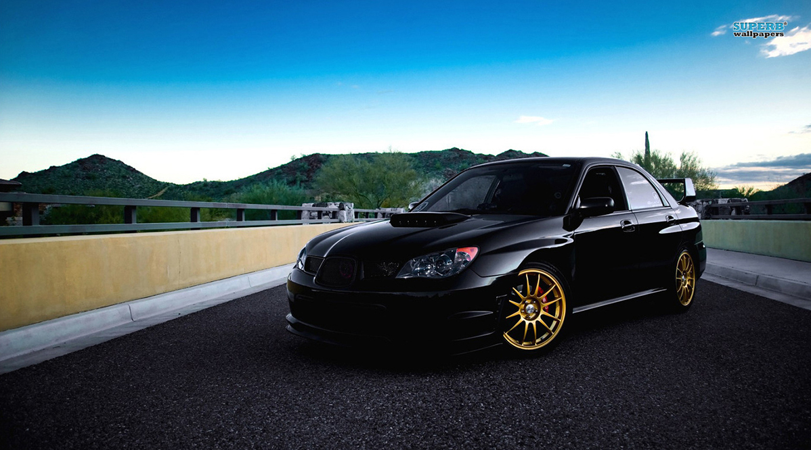XV
El Subaru XV es un SUV del segmento C producido por el fabricante japonés Subaru desde el año 2011. Lanzado en el mercado europeo en enero de 2012. El Subaru XV está desarrollado sobre la misma plataforma que el Subaru Impreza de IV generación.
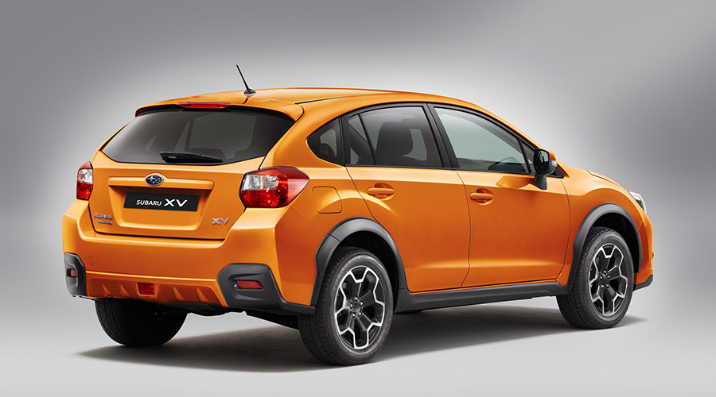